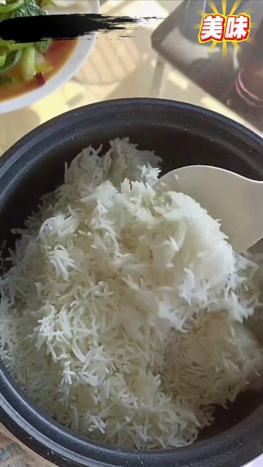
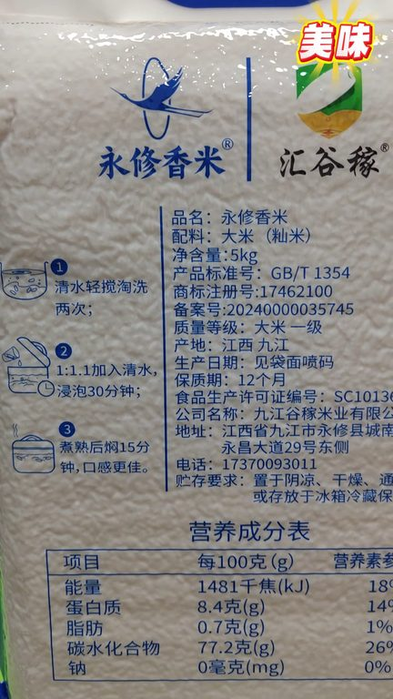
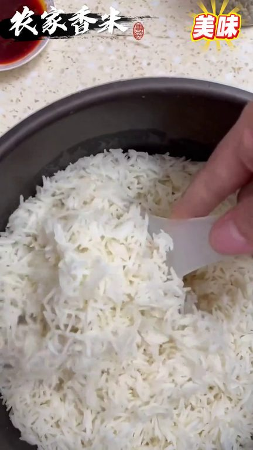

TOP 1 · 代表素材深度拆解
核心放量 稳健
视频为原始素材 HTTPS 链接；点击后加载，建议在网络环境良好时播放。
30.1万素材消耗
3.94%CTR
33.7%类目消耗占比
+0.70pp较类目均值
表现判断
该素材是类目内第 1 名，属于“核心放量”；CTR 高于类目均值。消耗体现承接规模，CTR 体现首屏与定向效率，两项应结合判断，不能仅以单指标下结论。
表达标签
口播三段式证据
开场钩子蒸了一锅饭全家人研究了半天有人说他是虫子他又不会动还有人说是米又没见过这么长的他就是柯柯都有瓜子那么长的长粒香米如果说你家里的大米快要吃完了你先不要着急出去买了厂家新店开业刚刚入住咱们优秀的平台
中段论证那你就别拍了说明活动已经结束了老乡你年前买的米吃完了没有如果说你吃完了你来试一下这个大米它就是高升提前长的香米就这个大米不要产力都能吃包如果说你家的大米快吃完了先不要着急出去买了我们过日子呀该省省该花花今天你刷的我这个视频呀真的是太幸运了厂家要新年开议呀想要快速的打开小路决定呀赔本转腰和了你们听好了今天49不要39不花就说话的这一分钟时间后台都已经抢冒烟了你…
结尾转化便宜到家了老板娘就是为了充次销量排行榜直接拿出来一百单作为见面礼这个得拼手速了谁抢到谁幸运咱们都知道这个梯田农家种植的长粒香米好吃它一年只收一茶用它焖出来的米饭满屋子飘香软糯香甜煮出来的大米粥口感也是特别好不吃菜那都要吃上五大碗米饭关键是它这个价格特别的实惠您可千万不要错过了不要等
有效点
- CTR 3.94% 高于类目均值 3.24%，开场或人群指向具备点击优势
- 包含使用或实测表达，能够把抽象卖点转化为可感知证据
迭代动作
- 保留当前高效钩子，复制 3 个变量版本：人物、首句和首帧分别单变量测试
- 视频时长偏长，建议剪出 30–45 秒短版，仅保留钩子、两项证据和一次 CTA
- 促销口径与资质信息保持同屏可验证，结尾只保留一个明确行动指令
合规关注

钩子建立 · 8.5s

场景/问题展开 · 64.5s

卖点证据 · 148.6s
转化收口 · 204.6s
查看完整口播摘要
蒸了一锅饭全家人研究了半天有人说他是虫子他又不会动还有人说是米又没见过这么长的他就是柯柯都有瓜子那么长的长粒香米如果说你家里的大米快要吃完了你先不要着急出去买了厂家新店开业刚刚入住咱们优秀的平台为了快速的打开销路决定赔本赚腰盒了今天59不要了39也不花了只需29块9给您包邮送到家这29.9可不是一斤呀是整整的十斤它可是梯田农家种植的长粒香米一年只收一茶你用它闷出来的米饭满屋子飘香软糯香甜煮出来的大米粥口感也是特别的好不吃菜呀我都能吃上三大碗关键是它这个价格呀也特别的实惠您可千万不要等家里的大米吃完了再想着来买那可就不是这个价格了你们赶紧点开小黄车去看一下还是不是活动价格29.9给您包邮送到家十斤如果是的话那就闭眼拍就完事了如果恢复59.9的话那你就别拍了说明活动已经结束了老乡你年前买的米吃完了没有如果说你吃完了你来试一下这个大米它就是高升提前长的香米就这个大米不要产力都能吃包如果说你家的大米快吃完了先不要着急出去买了我们过日子呀该省省该花花今天你刷的我这个视频呀真的是太幸运了厂家要新年开议呀想要快速的打开小路决定呀赔本转腰和了你们听好了今天49不要39不花就说话的这一分钟时间后台都已经抢冒烟了你们是真的实惠呀他可是提前农家种植的长粒的大米他一年呀只收这么一茶您用他焖出来的米饭呀满屋子飘香软糯香甜的煮成的这个大米粥呀口感特别的好不吃菜呀那都能够吃上呀三大碗米饭关键呀他这个价格呀特别的实惠您可千万呀不要错过了不要等着家里边的大米呀咱们吃完了你再去买到那个时候呀就不是这个价格呀活动呀早就结束了到那个时候呀嫁儿们您就是拍大腿呀也没有用了下方想要这样你们赶紧去看看想要的哥哥姐姐们咱们赶紧点开下方小招去看一下还是不如活动家如果是的话您就闭着眼睛拍他就完事了怎么了蒸了一锅米饭全家人研究半个小时有人说是虫子还有人说是米但从来没见过这么长的米呀他就是特色长粒香米如果说你家的大米快吃完了你别着急上超市去买了你不妨尝一尝我们这个梯田的长粒香大米就这个大米它真的是口感不一样米香味浓郁这一年就收一茶它是农家梯田种植的优质大米不打辣也不抛光收到货打开袋子就能闻到浓浓的米香味蒸出来的米饭软糯香甜那口感细腻你就用它熬出来的粥上面也飘着一层米油今天赶上厂家第三家店铺开业就这一大袋时间还给你包油到家才29块9毛钱你就说这个价格香不香吧就这个长粒香米我敢说你吃上一回还会回购的名额不多下方小黄车赶紧去拍吧完了降价了梯田长粒香米大降价了一个账号只能领一单不多就一百单领完为止这个大便宜咱不要白白不要今天就是一个运费和成本钱相当于大米送给你吃了下方小黄车您点开看一眼吧便宜到家了老板娘就是为了充次销量排行榜直接拿出来一百单作为见面礼这个得拼手速了谁抢到谁幸运咱们都知道这个梯田农家种植的长粒香米好吃它一年只收一茶用它焖出来的米饭满屋子飘香软糯香甜煮出来的大米粥口感也是特别好不吃菜那都要吃上五大碗米饭关键是它这个价格特别的实惠您可千万不要错过了不要等